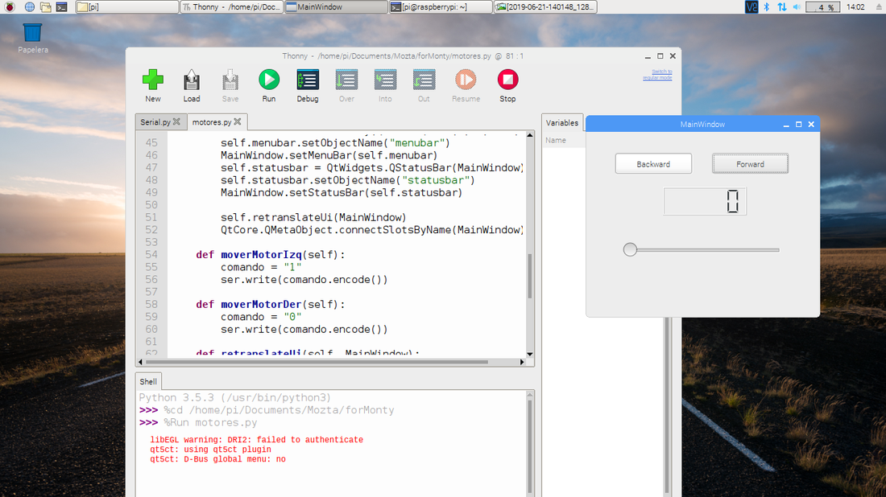
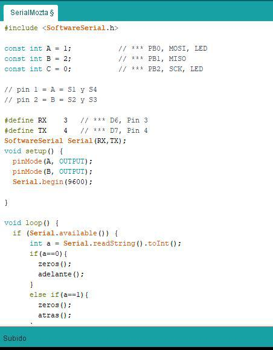

The comparison//
Qt
- Background
- Qt is developed as a free and open source software through the Qt Project, where both the community and developers of Nokia, Digia and other companies participate. Previously, it was developed by the Qt software division of Nokia, which came into force after the acquisition by Nokia of the Norwegian company Trolltech, the original producer of Qt, on June 17, 2008. Qt is distributed under the terms of the GNU Lesser General Public License and others. On the other hand, Digia is in charge of commercial licenses of Qt since March 2011.
- Qt is used in KDE, desktop environment for systems such as GNU / Linux or FreeBSD, among others.
- Qt uses the C ++ programming language natively.
- Pros
- It's cross-platform and it uses the system's resources to draw windows, controls, etc so your application will get a native look (e.g on a Mac your app window will be lacking the menu bar and the menu bar will appear on the system's menu bar as it is the standard behavior on the Mac platform).
- Writing in C++ gives you great control, the possibility to work with fantastic libraries like the STL, Boost, etc; and your code is compiled to native binaries that will run at full speed without the need for a virtual machine.
- Qt is open source and is developed by the Qt Group (formerly Trolltech) at Nokia so you have a very large enterprise maintaining it with the support from the community and ensuring it's evolution.
- QT isn’t simply a user interface library, so when you want to write an app for Windows and QT, you will write it in C++ and it will be uncomplicated to change it to work with Android, as there exist cross-platform modules, like database, media playback, networks, and so on. It is vital for testing. The support of docs and tools are on a good level as well.
- Cons
- The fact that it uses a metaobject compiler adds a bit of complexity to the build process and is just kind of ugly on an aesthetic level. People who write C++ like C++. They don't want to write to some third-party extension to C++; that is, think of the vitriol we see when Microsoft designs frameworks like this.
- Because of the metaobject thing and other issues, it is a lot easier to develop Qt applications using QtCreator but you might not want to because you might happen to like your normal C++ development environment.
- Qt tends to re-invent the wheel instead of relying on the standard library; e.g., do we really need yet another string class? I understand this is mostly for historical reasons but it is annoying nonetheless.
- The time of startups of applications is long without using Qt Quick Compiler, and to get this, you must obtain the Commercial version of Qt.
Processing
- Background
- Started by Ben Fry and Casey Reas in 2001
- Created as a form of providing a way to code to non-coders, visual types
- Software sketchbook
- Pros
- Free and Open Source
- Runs in Mac, Windows & GNU/Linux platforms
- Really good for creative types
- Great community that adds libraries and tools constantly
- Cons
- Don't have full control over code
- Not great with system resources
- As in any open source language, the constante evolution can become confusing over time
- Multi-Platform but not yet available for iOS
App Inventor
- Background
- App Inventor for Android is an open-source web application originally provided by Google, and now maintained by the Massachusetts Institute of Technology (MIT), which allows newcomers to computer programming to create software applications for the Android operating system (OS).
- Pros
- Easy and intuitive
- You can work online
- It is very less time-consuming; you can develop an App in less than one hour.
- Access to most of the phone's functionality: phone calls, SMS texting, sensors for location, orientation, and acceleration, text-to-speech and speech recognition, sound, video, etc.
- Cons
- It’s not possible to generate Java code for deeper developments.
- Only for Android, IOS is excluded.
My interface//
For my individual assignment, I decided to use my output device that I did to control an engine, at the time, what I did in that task was to invert the direction of the engine through a pushbutton. For this task I wanted to make a simple interface but I could control the direction of the engine and speed through a graphical interface.
The graphical interface on which I decided to base myself was to use QT, which is an object-oriented multiplatform work environment widely used to develop programs that use graphical user interface, as well as different types of tools for the command line and consoles for servers that do not need a graphical user interface.
Qt is developed as a free and open source software through the Qt Project, where both the community and developers of Nokia, Digia and other companies participate. Previously, it was developed by the Qt software division of Nokia, which came into force after the acquisition by Nokia of the Norwegian company Trolltech, the original producer of Qt, on June 17, 2008. Qt is distributed under the terms of the GNU Lesser General Public License and others. On the other hand, Digia is in charge of commercial licenses of Qt since March 2011.
Qt is used in KDE, desktop environment for systems such as GNU / Linux or FreeBSD, among others.
Qt uses the C ++ programming language natively, however for me it is not such a friendly language, so use a binding to use the python language with QT.
471/5000 To do this, use the QT Designer software, which is an interface to create applications in a very visual way, practically dragging widgets. Design something simple but functional, add 2 buttons one to go back and another to go forward, a label to indicate the speed and a horizontal slider to adjust the speed of the engine.
After creating my interface, save the file in .ui format which then transforms to python code.
To transform the .ui file to .py install a binding of the graphic library Qt for the Python programming language. The library is developed by the British firm Riverbank Computing and is available for Windows, GNU / Linux and Mac OS X under different licenses.
It is worth mentioning that I advise using a virtual environment to install this type of files, in this way you isolate the libraries and bindings necessary for your project, without affecting the whole system.
With the following command, I converted the file to python code using a terminal:
pyuic5 motores.ui -o motores.py
And to execute it, it is necessary to add the following code to the file so that it can be launched as a window:
if __name__ == "__main__":
import sys
app = QtWidgets.QApplication(sys.argv)
MainWindow = QtWidgets.QMainWindow()
ui = Ui_MainWindow()
ui.setupUi(MainWindow)
MainWindow.show()
sys.exit(app.exec_())
Finally, save the file and execute the file, thus showing the project window.

